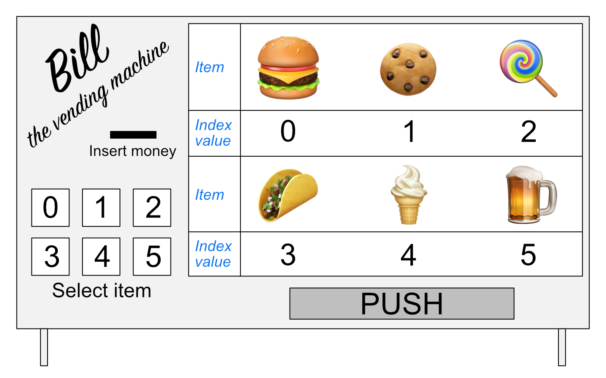

Lists and indices#
In the previous section, we learned a bit about variables, their values, and data types. We will now continue with a new data type called a list. Using a list, we can store many related values together with a single variable. In Python, there are several different types of data that can be used to store values together in a collection, and a list is the simplest type.
To explore lists, we will be using data related to Finnish Meteorological Institute (FMI) observation stations [1]. For each station, a number of pieces of information are given, including the name of the station, an FMI station ID number (FMISID), its latitude, its longitude, and the station type.
Creating a list#
Let’s first create a list of some station names and print it out.
station_names = [
"Helsinki Harmaja",
"Helsinki Kaisaniemi",
"Helsinki Kaivopuisto",
"Helsinki Kumpula",
]
station_names
['Helsinki Harmaja',
'Helsinki Kaisaniemi',
'Helsinki Kaivopuisto',
'Helsinki Kumpula']
We can also check the type of the station_names list using the type() function.
type(station_names)
list
Here we have a list of 4 station name values in a list called station_names. As you can see, the type() function recognizes this as a list. Lists can be created using the square brackets [ and ], with commas separating the values in the list.
Number of items in a list#
You can find the length of a list using the len() function.
len(station_names)
4
Just as expected, there are 4 values in our list and len(station_names) returns a value of 4.
Index values#
To access an individual value in a list we need to use an index value. An index value is a number that refers to a given position in the list. Let’s check out the first value in our list as an example by printing out station_names[1]:
station_names[1]
'Helsinki Kaisaniemi'
Wait, what? This is the second value in the list we’ve created, what is wrong? As it turns out, Python (and many other programming languages) start values stored in collections with the index value 0. Thus, to get the value for the first item in a list, we must use index 0. Let’s print out the value at index 0 of station_names.
station_names[0]
'Helsinki Harmaja'
OK, that makes sense, but it may take some getting used to…
A useful analog - Bill the vending machine#
As it turns out, index values are extremely useful, common in many programming languages, yet often a point of confusion for new programmers. Thus, we need to have a trick for remembering what an index value is and how they are used. For this, we need to be introduced to Bill (Figure 2.1).

Figure 2.1. Bill, the vending machine.
As you can see, Bill is a vending machine that contains 6 items. Like Python lists, the list of items available from Bill starts at 0 and increases in increments of 1.
The way Bill works is that you insert your money, then select the location of the item you wish to receive. In an analogy to Python, we could say Bill is simply a list of food items and the buttons you push to get them are the index values. For example, if you would like to buy a taco from Bill, you would push button 3. If we had a Python list called Bill, an equivalent operation would simply be
print(Bill[3])
Taco
Index value tips#
In our example station_names list we can easily see it contains 4 values. Thus, we should be able to use this to find the value of the last item in the list, right? What happens if you print the value from the station_names list at index 4, the value of the length of the list?
station_names[4]
---------------------------------------------------------------------------
IndexError Traceback (most recent call last)
Cell In[7], line 1
----> 1 station_names[4]
IndexError: list index out of range
An IndexError? That’s right, since our list starts with index 0 and has 4 values, the index of the last item in the list is len(station_names) - 1. That isn’t ideal, but fortunately there’s a nice trick in Python to find the last item in a list. Let’s first print the station_names list to remind us of the values that are in it.
station_names
['Helsinki Harmaja',
'Helsinki Kaisaniemi',
'Helsinki Kaivopuisto',
'Helsinki Kumpula']
To find the value at the end of a list, we can print the value at index -1. To go further up a list in reverse, we can simply use larger negative numbers, such as index -4.
station_names[-1]
'Helsinki Kumpula'
station_names[-4]
'Helsinki Harmaja'
Yes, in Python you can go backwards through lists by using negative index values. Index -1 gives the last value in the list and index -len(station_names) would give the first. Of course, you still need to keep the index values within their ranges. What happens if you check the value at index -5?
station_names[-5]
---------------------------------------------------------------------------
IndexError Traceback (most recent call last)
Cell In[11], line 1
----> 1 station_names[-5]
IndexError: list index out of range
Question 2.6#
Which animal is at index -2 in the Python list below?
cute_animals = ["bunny", "chick", "duckling", "kitten", "puppy"]
Show code cell content
# Solution
cute_animals = ["bunny", "chick", "duckling", "kitten", "puppy"]
cute_animals[-2]
'kitten'
Modifying values in lists#
Another nice feature of lists is that they are mutable, meaning that the values in a list that has been defined are able to be modified. The immutable equivalent of a list in Python is called a tuple, which we will use later in this part of the book. Consider a list of the observation station types corresponding to the station names in the station_names list.
station_types = [
"Weather stations",
"Weather stations",
"Weather stations",
"Weather stations",
]
station_types
['Weather stations',
'Weather stations',
'Weather stations',
'Weather stations']
Let’s change the value for station_types[2] to be 'Mareographs' and print out the station_types list again.
station_types[2] = "Mareographs"
station_types
['Weather stations', 'Weather stations', 'Mareographs', 'Weather stations']
Data types in lists#
One of the benefits of a list is that they can be used to store more than one type of data. Let’s consider that instead of having a list of each station name, FMISID, latitude, etc. we would like to have a list of all of the values for a single station. In this case we will create a new list for the Helsinki Kaivopuisto station.
station_name = "Helsinki Kaivopuisto"
station_id = 132310
station_lat = 60.15
station_lon = 24.96
station_type = "Mareographs"
Now that we have defined five variables related to the Helsinki Kaivopuisto station, we can combine them in a list similar to how we have done previously.
station_hel_kaivo = [station_name, station_id, station_lat, station_lon, station_type]
station_hel_kaivo
['Helsinki Kaivopuisto', 132310, 60.15, 24.96, 'Mareographs']
Here we have one list with 3 different types of data in it. We can confirm this using the type() function. Let’s check the type of station_hel_kaivo and the types of the values at indices 0-2.
type(station_hel_kaivo)
list
type(station_hel_kaivo[0]) # The station name
str
type(station_hel_kaivo[1]) # The FMISID
int
type(station_hel_kaivo[2]) # The station latitude
float
Note that although it is possible to have different types of data in a Python list, you are generally encouraged to create lists containing the same data types. Data science workflows are often built around handling collections of data of the same type and having multiple data types in a list may cause problems for software you are trying to use.
Common list operations#
Adding and removing values from lists#
In addition to modifying list values, we can add and remove values from lists to change their content and lengths. Let’s consider that we no longer want to include the first value in the station_names list. Since we have not seen that list in a bit, let’s first print it out.
station_names
['Helsinki Harmaja',
'Helsinki Kaisaniemi',
'Helsinki Kaivopuisto',
'Helsinki Kumpula']
The del statement allows values in lists to be removed. It can also be used to delete values from memory in Python. To remove the first value from the station_names list, we can simply type del station_names[0]. If you then print out the station_names list, you should see the first value has been removed.
del station_names[0]
station_names
['Helsinki Kaisaniemi', 'Helsinki Kaivopuisto', 'Helsinki Kumpula']
In addition to the del statement, there are two other common approaches for removing items from lists in Python. Let’s consider both with an example list called demo_list.
demo_list.remove(value): Will iterate over the listdemo_listand remove the first item with a value equal tovaluedemo_list.pop(index): Will remove the item at indexindexfrom the listdemo_list
If we would instead like to add a few more stations to the station_names list, we can type station_names.append('List item to add'), where 'List item to add' would be the text that would be added as a new item in the list in this example. Let’s add two values to our list: 'Helsinki lighthouse' and 'Helsinki Malmi airfield' and check the list contents after this.
station_names.append("Helsinki lighthouse")
station_names.append("Helsinki Malmi airfield")
station_names
['Helsinki Kaisaniemi',
'Helsinki Kaivopuisto',
'Helsinki Kumpula',
'Helsinki lighthouse',
'Helsinki Malmi airfield']
As you can see, we add values one at a time using station_names.append(). list.append() is called a method in Python, which is a function that works for a given data type (a list in this case).
Caution: Data types and their methods#
Let’s consider our station_names list. As we know, we already have data in the list station_names and we can modify that data using built-in methods such as station_names.append(). In this case, the method .append() is something that exists for the list data type, but not for other data types. It is intuitive that you might like to add (or append) things to a list, but perhaps it does not make sense to append to other data types. Let’s create a variable station_name_length that we can use to store the length of the list station_names. We can then print the value of station_name_length to confirm the length is correct.
station_name_length = len(station_names)
station_name_length
5
If we check the data type of station_name_length, we can see it is an integer value as expected.
type(station_name_length)
int
Let’s see what happens if we try to append the value 1 to station_name_length.
station_name_length.append(1)
---------------------------------------------------------------------------
AttributeError Traceback (most recent call last)
Cell In[34], line 1
----> 1 station_name_length.append(1)
AttributeError: 'int' object has no attribute 'append'
Here we get an AttributeError because there is no method built in to the int data type to append to int data. While .append() makes sense for list data, it is not sensible for int data, which is the reason no such method exists for int data.
Counting and locating values in lists#
With lists we can do a number of useful things, such as count the number of times a value occurs in a list or where it occurs. The .count() method can be used to find the number of instances of an item in a list. For instance, we can check to see how many times 'Helsinki Kumpula' occurs in our list station_names by typing station_names.count('Helsinki Kumpula').
station_names.count("Helsinki Kumpula")
1
Similarly, we can use the .index() method to find the index value of a given item in a list. Let’s find the index of 'Helsinki Kumpula' in the station_names list.
station_names.index("Helsinki Kumpula")
2
The good news here is that our selected station name is only in the list once. Should we need to modify it for some reason, we also now know where it is in the list (index 2).
There are two other common methods for lists that are quite useful.
Reversing a list#
The .reverse() method can be used to reverse the order of items in a list. Let’s reverse our station_names list and then print the results.
station_names.reverse()
station_names
['Helsinki Malmi airfield',
'Helsinki lighthouse',
'Helsinki Kumpula',
'Helsinki Kaivopuisto',
'Helsinki Kaisaniemi']
Yay, it works! A common mistake when reversing lists is to do something like station_names = station_names.reverse(). Do not do this! When reversing lists with .reverse() the None value is returned (this is why there is no screen ouput when running station_names.reverse()). If you then assign the output of station_names.reverse() to station_names you will reverse the list but then overwrite its contents with the returned value None. This means you’ve deleted the contents of your list!
Sorting a list#
The .sort() method works the same way as reversing a list. Let’s sort our station_names list and print its contents.
station_names.sort() # Notice no output here...
station_names
['Helsinki Kaisaniemi',
'Helsinki Kaivopuisto',
'Helsinki Kumpula',
'Helsinki Malmi airfield',
'Helsinki lighthouse']
As you can see, the list has been sorted alphabetically using the .sort() method, but there is no screen output when this occurs. Again, if you were to assign that output to station_names the list would get sorted but the contents would then be assigned None. And as you may have noticed, Helsinki Malmi airfield comes before Helsinki lighthouse in the sorted list. This is because alphabetical sorting in Python places capital letters before lowercase letters.